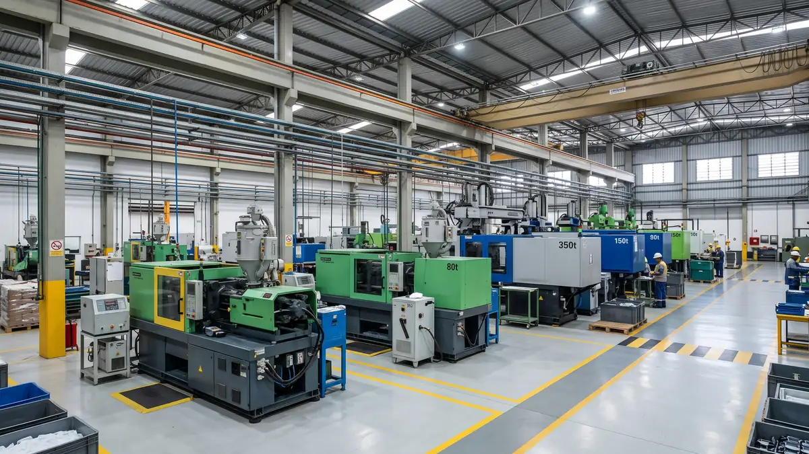
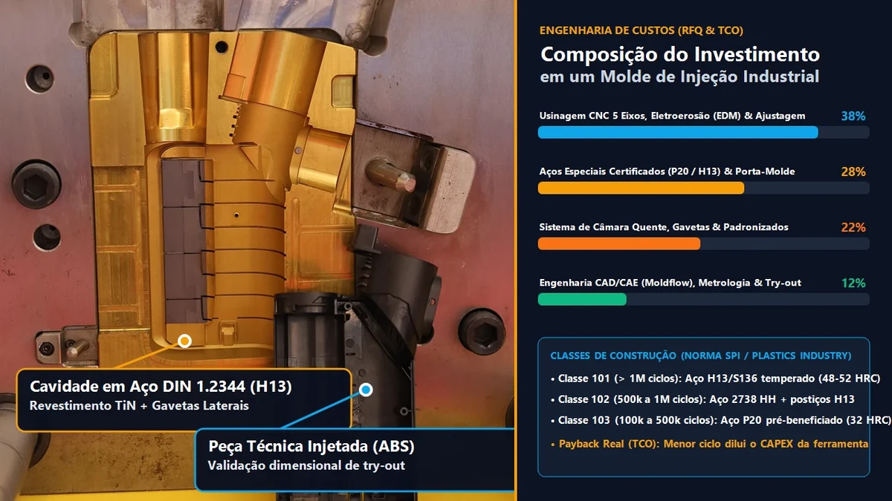

Lote Mínimo de Injeção Plástica: Como Calcular o MOQ Economicamente Viável
Lote mínimo de injeção plástica consiste em um cálculo de custo fixo por corrida, não em uma tabela fixa de fornecedor.

O lote mínimo de injeção plástica consiste em um cálculo econômico, e não em uma tabela fixa de fornecedor: é o volume em que o custo de setup, o refugo de purga e a amortização do molde deixam de dominar o preço da peça. Em moldes de 1 a 2 cavidades em aço P20, esse ponto costuma ficar entre 500 e 2.000 peças por corrida.
A conta surpreende o comprador. Um molde de R$ 60.000 amortizado em 500 peças adiciona R$ 120,00 por unidade só de ferramental; diluído em 50.000 peças, adiciona R$ 1,20. Somando de 1,5 a 6 horas de setup, purga de 1 a 3 kg de resina e refugo de partida de 2% a 5%, o lote curto pode custar de 3 a 6 vezes mais por peça que o lote econômico.
"Não existe MOQ de tabela. Existe o volume em que o custo fixo por corrida se dilui até deixar de ser o maior componente do preço unitário."
O que compõe o custo fixo de uma corrida curta
Três blocos incidem sobre cada setup: preparação e secagem da resina (1 a 4 horas em PA66 e PC), purga e estabilização térmica da máquina (0,5 a 2 horas) e refugo das primeiras peças até o processo estabilizar, medido em CEP. Em injetoras de 80 t a 350 t a hora-máquina fica entre R$ 90 e R$ 220, o que faz o setup pesar mais que o material em corridas abaixo de 1.000 peças.
| Volume da corrida | Amortização do molde (R$ 60 mil) | Setup e purga rateados | Custo fixo no unitário |
|---|---|---|---|
| 500 peças | R$ 120,00/peça | R$ 0,27 a R$ 2,64 | 85% a 90% |
| 2.000 peças | R$ 30,00/peça | R$ 0,07 a R$ 0,66 | 55% a 70% |
| 10.000 peças | R$ 6,00/peça | R$ 0,01 a R$ 0,13 | 25% a 40% |
| 50.000 peças | R$ 1,20/peça | abaixo de R$ 0,03 | 8% a 15% |
Faixas de referência para molde de 2 cavidades em P20, ciclo de 25 s e hora-máquina de R$ 150. O percentual cai com mais cavidades e sobe com resina de engenharia seca em estufa.
Como calcular o lote mínimo em quatro passos
O cálculo parte do custo fixo total da corrida e busca o volume em que esse valor representa fatia aceitável do preço unitário — na prática, abaixo de 20% a 25%.
- Levante o custo fixo: setup, secagem, purga e refugo de partida da corrida, em reais.
- Divida pelo unitário-alvo: resulta o número mínimo de peças para o custo fixo ficar em 20% do preço.
- Compare com a vida útil do molde: a corrida não deve consumir mais de 5% dos ciclos previstos.
- Feche pelo lote de reposição: o lote cobre o consumo até o próximo setup sem gerar estoque parado.
Quando o lote pequeno deixa de ser viável
Abaixo de 300 peças o custo fixo raramente fecha a conta em molde de aço. Existem alternativas técnicas, e todas precisam ser comparadas ao custo do lote mínimo convencional antes da decisão.
- Molde de protótipo em alumínio: classe SPI 104 custa de 40% a 60% menos e atende de 100 a 5.000 peças.
- Postiço intercambiável: permite trocar versão de produto sem refazer a cavidade inteira.
- Lote programado: consolida 2 a 3 meses de demanda em uma corrida e dilui o setup.

Do protótipo ao lote seriado sem refazer o molde
Quando o volume ainda é incerto, o caminho de menor risco é projetar a cavidade com postiços intercambiáveis: o lote piloto roda em alumínio e, na virada para produção, apenas o inserto é substituído por aço H13 temperado. O custo incremental fica entre 15% e 25% do molde, contra 100% de uma ferramenta nova.
Continue a análise técnica
Perguntas Frequentes
Qual é o lote mínimo para injetar uma peça plástica?
Não existe número universal: o lote mínimo viável é aquele em que o custo fixo da corrida — setup, secagem, purga e refugo de partida — cai abaixo de 20% a 25% do custo unitário. Em molde de 2 cavidades em P20 isso ocorre tipicamente entre 500 e 2.000 peças.
O que mais encarece um lote pequeno de injeção?
Tempo de setup e estabilização (1,5 a 6 horas), purga de 1 a 3 kg de resina e refugo das primeiras peças até o processo estabilizar. Em corridas de 500 peças esse conjunto pode representar 85% do preço unitário.
A resina também tem lote mínimo de compra?
Sim. Resinas de engenharia como PA66 GF30 e PC são vendidas em sacos de 25 kg com mínimo de 500 kg a 1.000 kg por cor e lote; cores sob medida exigem volumes maiores. Esse mínimo do fornecedor entra no cálculo do MOQ da peça.
Como negociar reposição sem pagar preço de lote pequeno?
Programando a demanda: consolidar 2 a 3 meses em uma corrida, manter o molde em consignação na injetora e acordar janela fixa de produção reduzem o número de setups por ano e aproximam o preço do lote econômico.
Conclusão Estratégica
O lote mínimo não é política comercial, é conta. Calcular o custo fixo por corrida e compará-lo à vida útil do molde evita as duas armadilhas: pagar caro em 500 peças ou imobilizar capital em 30 mil peças sem demanda. A decisão correta consiste em dimensionar o lote pelo consumo real e pela amortização, nunca pelo preço unitário isolado.